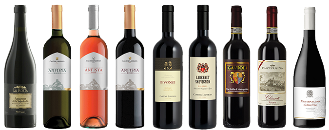

<footer>
    <div class="container-fluid footer-container">
        <div class="row footer-row font-color-white">
            <div class="col-sm-12 col-xs-12 col-md-3">
                <h2>Useful Links:</h2>
                <ul>
                    <li><a href="/enquiryForm">Enquiries</a></li>
                    <li><a href="/aboutUs">About US</a></li>
                    <li><a href="/contacts">Contacts</a></li>
                </ul>
            </div>
            <div class="col-sm-12 col-xs-12 col-md-3">

                <h2>Social:</h2>
                <div class="footer-col-text-container">
                    <span class="fa fa-facebook-square fa-3x"></span>
                    <span class="fa fa-twitter-square fa-3x"></span>
                    <span class="fa fa-linkedin-square fa-3x"></span>
                </div>
            </div>
            <div class="col-sm-6">
                <h2>About Us:</h2>
                <p class="footer-col-text-container">We are the UK official distributor of the Lavorata Winery. It was founded in 1958 by Vincenzo Lavorata.
                    The winery is situated in Roccella Jonica a
                    town in the southern part of the Ionian Coast and close to the splendid “Stilaro-Allaro” valley in the Province of Reggio Calabria.</p>
            </div>
        </div>
        <div class="row">
            <div class="col-sm-12 footer-image">
                
                
            </div>

        </div>
    </div>
</footer>